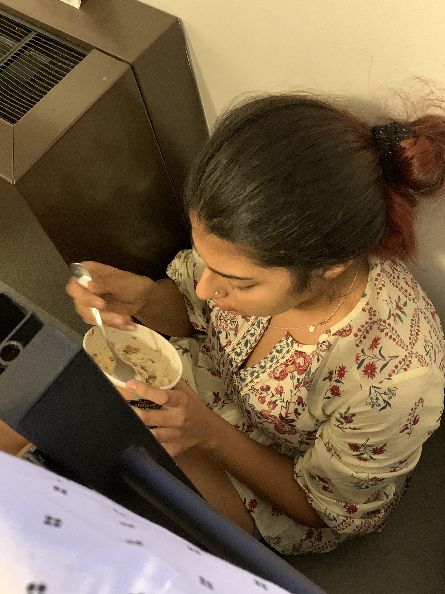
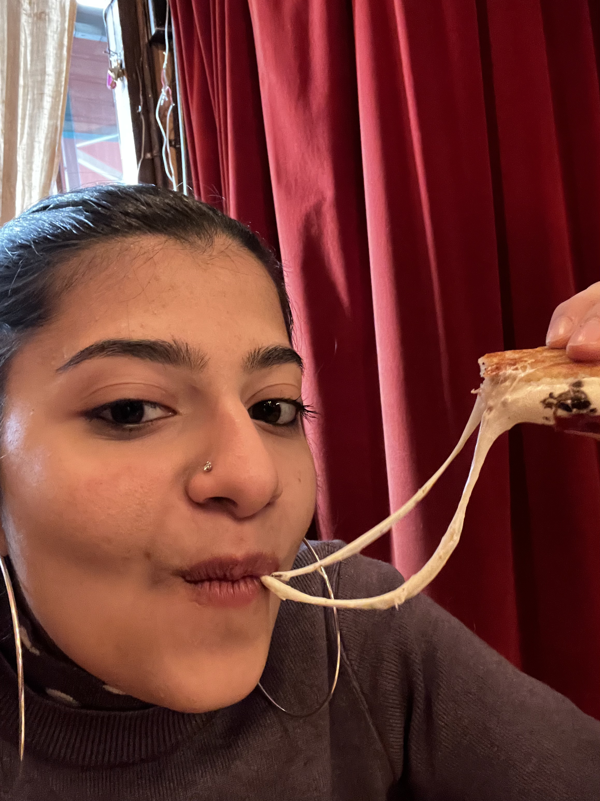
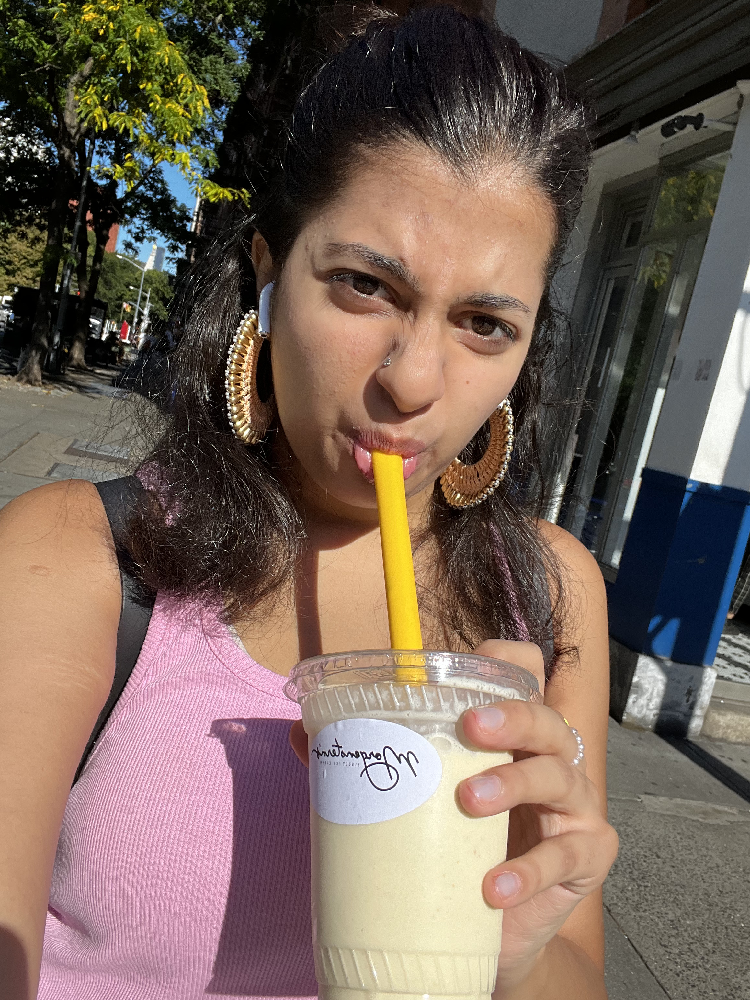

About Me




I decided to build this website with the aim of creating a community
for like minded individuals who love food and want to cook but just can't
or are too lazy to do so.
I will teach you step by step from my experience which has been
combination of loads of laziness and alot of trying and more laziness
I am a foodie and not just a foodie like every Tom, Dick and Harry
claims to be but a real one.
What clarifies for a 'real' foodie?
Someone who can tell you most ingredients used in a recipe
by taking just a few bites.
This is how it all started (look at the kid-yes it's me)